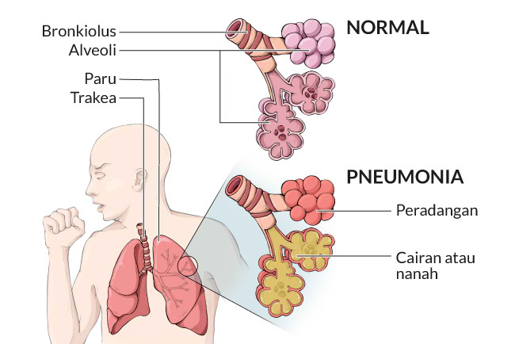

Pneumonia: Penyebab, Gejala, Pengobatan, dan Pencegahan
Pengertian Pneumonia
Pneumonia adalah peradangan paru-paru yang disebabkan oleh infeksi. Pneumonia bisa menimbulkan gejala yang ringan hingga berat. Beberapa gejala yang umum dialami penderita pneumonia adalah batuk berdahak, demam, dan sesak napas.
Pneumonia juga dikenal dengan istilah paru-paru basah. Pada kondisi ini, infeksi menyebabkan peradangan pada kantong-kantong udara (alveoli) di salah satu atau kedua paru-paru. Akibatnya, alveoli dipenuhi cairan atau nanah sehingga membuat penderitanya sulit bernapas.

Pneumonia bisa disebabkan oleh infeksi virus, bakteri, atau jamur. SARS-CoV-2 yang menyebabkan COVID-19 adalah salah satu jenis virus yang bisa menyebabkan pneumonia. Pneumonia terkadang juga bisa muncul beserta penyakit paru-paru lain, misalnya TB paru.
Pneumonia merupakan salah satu penyebab kematian tertinggi pada anak-anak di seluruh dunia. Data dari World Health Organization menyebutkan bahwa pada tahun 2019, sebanyak 740.180 anak-anak meninggal akibat pneumonia.
Penyebab dan Gejala Pneumonia
Pneumonia dapat disebabkan oleh infeksi bakteri, virus, dan jamur. Beberapa virus yang umum menyebabkan pneumonia adalah virus influenza, respiratory syncytial virus (RSV), dan SARS-CoV-2. Sementara jenis bakteri yang umum menyebabkan pneumonia adalah Streptococcus pneumonia.
Gejala pneumonia cukup bervariasi. Namun, umumnya pneumonia ditandai dengan batuk berdahak, demam, menggigil, sesak napas, nyeri dada ketika bernapas atau batuk, mual dan muntah, nafsu makan menghilang, serta tubuh yang mudah lelah.
Pengobatan dan Pencegahan Penumonia
Pengobatan pneumonia akan disesuaikan dengan penyebab dan tingkat keparahan yang dialami pasien. Pneumonia akibat infeksi bakteri akan ditangani dengan obat antibiotik. Dokter juga dapat memberikan obat pneumonia lain untuk meredakan gejala batuk, demam, atau nyeri.
Pneumonia dapat dicegah dengan beberapa cara, di antaranya menjalani vaksinasi, menjaga kebersihan diri, misalnya rajin mencuci tangan dan tidak menyentuh hidung atau mulut dengan tangan yang belum dicuci, dan menghindari kontak dengan orang yang sedang sakit